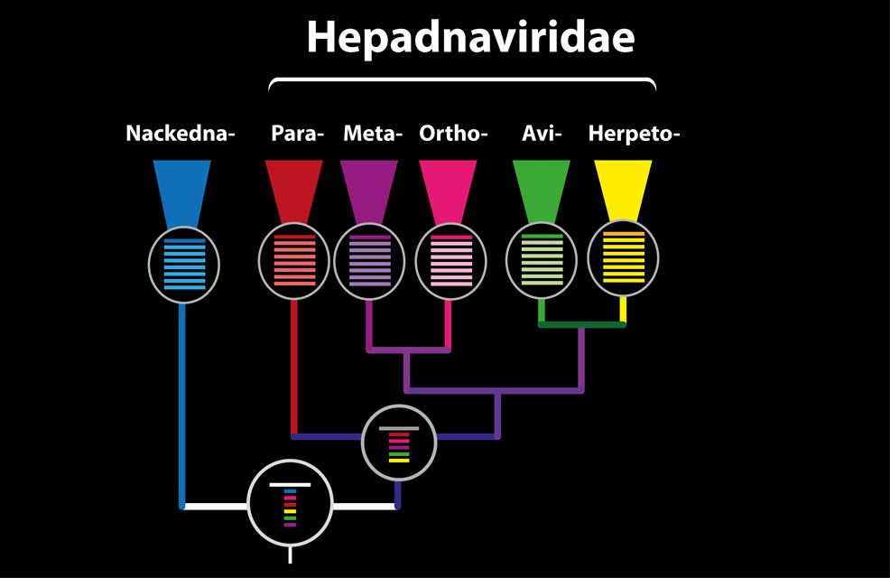

The alignment tree in Hepadnaviridae-GLUE
GLUE projects have the option of using a data structure called an alignment tree to create a set of linked multiple sequence alignments representing different taxonomic levels. We used this data structure to link MSAs in Hepadnaviridae-GLUE.

The schematic figure above shows the alignment tree structure in Hepadnaviridae GLUE. We have constructed 'tip' alignments at genus level, as well as a family-level alignment (located at an internal node in the tree above) representing the Hepadnaviridae, and a root alignment that includes the Nackednaviruses as an outgroup.
For the lower taxonomic levels (i.e. within and below genus level) we aligned complete coding sequences. For higher taxonomic levels (i.e. near the root) we aligned the polymerase or RT genes. We used GLUE to link these alignments, via a set of common reference sequences. The root alignment contains all reference sequences, whereas all children of the root inherit at least one reference from their immediate parent. Thus, all alignments are linked to one another via our chosen set of references.